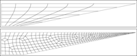

Information
For performance reasons, pyoomph uses GiNaC and CLN to automatically generate C code for the equations you have entered in python. It automatically generates C code for symbolically derived Jacobian matrices, parameter derivatives and Hessians. These even include the complicated derivatives with respect to the moving mesh coordinates on a symbolical level. The generated code is compiled and linked back to the running python script, either with the TinyC compiler (invoked by tccbox) or, when installed, with a more performant alternative like gcc, LLVM/clang or MSBuild.
Tutorial
-
Adaptive timestepping for the Lorenz attractor -

Stability analysis and bifurcation tracking of ODEs -
Hopf branch switching to periodic orbits -
Stability of periodic orbits via Floquet multipliers -
Spatial adaptivity for a 2d Poisson equation -
Flow around a sphere (Stokes law) -
No normal flow through a curved interface -
Generation of custom meshes -
Wave equation -
Rayleigh-Taylor instability -
Coalescence of droplets via lubrication theory -
Pattern formation and stability analysis -
Transient simulation of a free surface -
Three-dimensional droplet with varying wettability -
 Moving meshes and mesh reconstruction -
Droplet with Marangoni flow and gravity -
Melting of an ice cylinder -
Flow around a sphere with insoluble surfactants -
Evaporation of a water droplet -
Mixture evaporation from a Hele-Shaw cell -
Discontinuous Galerkin methods -
Linear response to periodic driving -
Bifurcation tracking of a detaching droplet -
Azimuthal stability analysis -
Cartesian normal mode stability analysis -
Coupling multiple simulations with preCICE
Features
- • Temporal ordinary differential equations •
- • Spatial boundary value problems •
- • Spatio-temporal problems •
- • Moving mesh (ALE) problems •
- • Automatic mesh reconstruction •
- • Spatial & temporal adaptivity •
- • Mixed elements •
- • Additional fields at interfaces •
- • Stability analysis & bifurcation tracking •
- • Periodic orbits & Floquet multipliers •
- • Linear response to periodic driving •
- • Azimuthal stability analysis •
- • Follow eigenbranches •
- • Fully symbolically derived Jacobian/Hessian •
- • Automatic non-dimensionalization •
- • Continuous and Discontinuous Galerkin Methods •
- • Multi-Domain and Multi-Physics •
- • Coordinate-system-agnostic formulation of equations •
- • Constraints via Lagrange multipliers •
- • Free surface dynamics with Marangoni flow •
- • Multi-component flow with mass transfer •
- • Vapor-liquid equilibria by group contribution models •
- • Surfactants with versatile isotherms •
- • Contact line dynamics •
- • Cartesian normal model analysis •
- • Coupling simulations via a preCICE adapter •
How it works